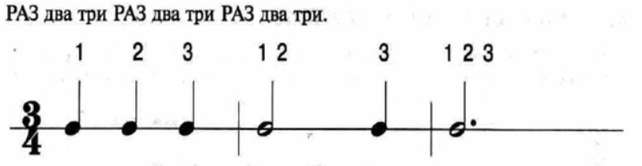
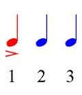

Урок 14. Сочинение в размере 3/4.
Теория
Размер 3/4 — это музыкальный размер, в котором в каждом такте три доли, и каждая доля равна четвертной ноте. Такой размер часто встречается в вальсах и других танцевальных мелодиях.
- В каждом такте три удара: раз — два — три. Первая доля — сильная, вторая и третья — слабые.
- Сочиняя мелодию в размере 3/4, важно чувствовать пульсацию и правильно расставлять акценты.
- Вальсовый ритм — это плавное чередование сильной и слабых долей, что придаёт музыке характерное «качание».
В начале нотной строки указывается размер 3/4, что помогает музыкантам правильно исполнять ритм.
Попробуйте сочинить короткую мелодию или ритмический рисунок в размере 3/4, используя знакомые ноты и ритмы.
Сочинение в размере 3/4 развивает чувство ритма и музыкальную фантазию.
Упражнения
- Распознавание размера: Определите, какой музыкальный размер звучит или записан (Вальс — классический пример музыки в размере 3/4; Три четверти в такте: раз — два — три; Первая доля — сильная, вторая и третья — слабые).
- Сочинение: Сочините короткую мелодию или ритмический рисунок в размере 3/4 (Соль, Ля, Си, До, Си, Ля, Соль).
Аудио-примеры
Пример вальса в размере 3/4:
Визуальные примеры
Размер 3/4 на нотном стане:

Схема сильных и слабых долей в 3/4:
